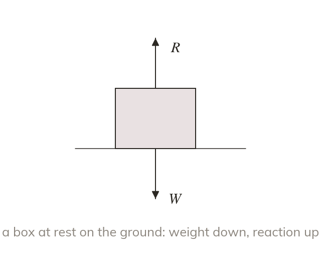
Every force on the body is drawn
A force diagram shows each force acting on the body as an arrow, labelled with its size or a letter. The weight acts downwards, and the normal reaction R acts upwards from the surface.
Every problem in mechanics starts with a force diagram: if a force is missing from the picture, every equation after it is wrong. Resolving the forces in each direction then tells us whether a body accelerates, which leads to next lesson.
Work down the page at your own pace. Write every answer in your book first, then click to check it.
Read each card, then follow the worked examples one step at a time.

A force diagram shows each force acting on the body as an arrow, labelled with its size or a letter. The weight acts downwards, and the normal reaction R acts upwards from the surface.
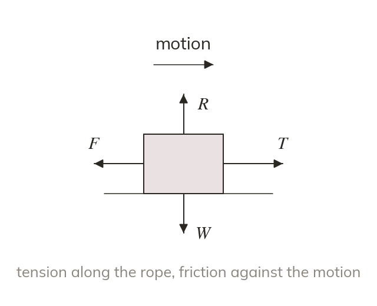
Tension in a string pulls away from the body, along the string. Friction and resistance act against the direction of motion.
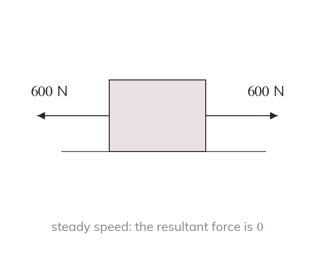
Newton's first law says a body stays at rest, or moves with constant velocity, unless a resultant force acts on it. A car at a steady speed has its driving force exactly balanced by the resistance.
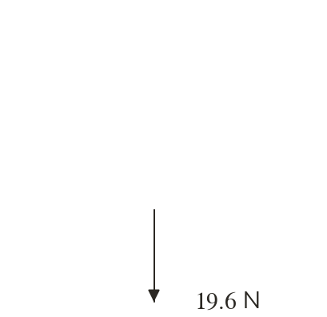
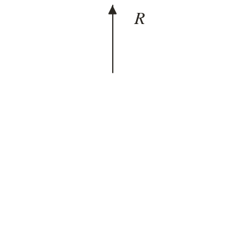
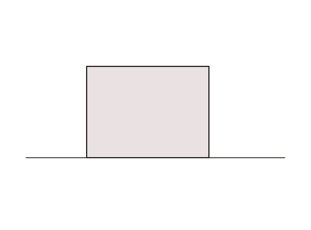
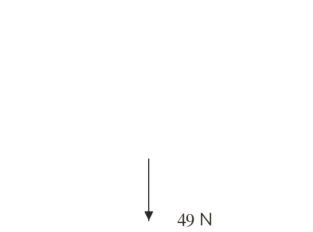
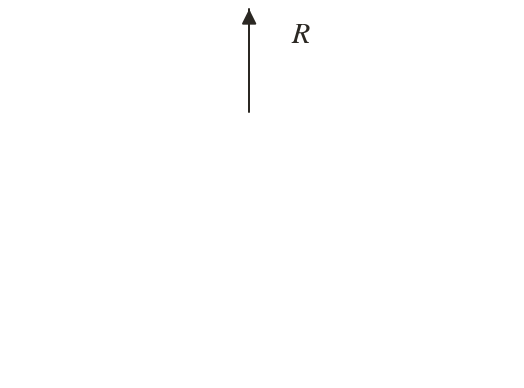
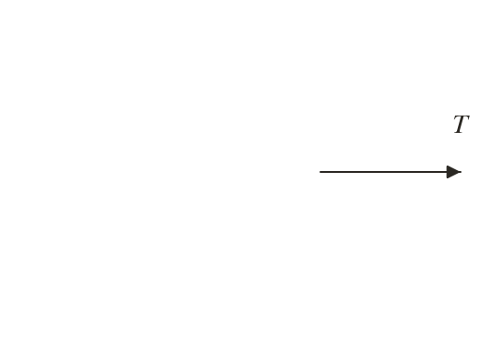
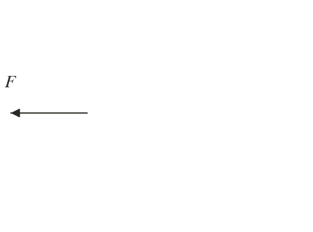
Pick an answer. If it's wrong, the feedback tells you which mistake it was.
Read each card, then follow the worked examples one step at a time.
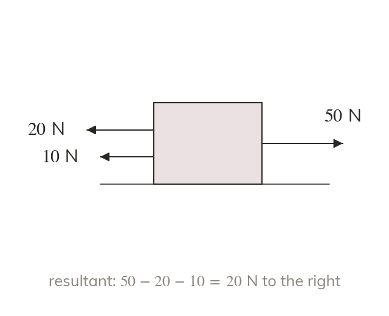
The resultant force in one direction is the sum of the forces that way, minus the forces the opposite way. Horizontal and vertical forces are resolved separately.
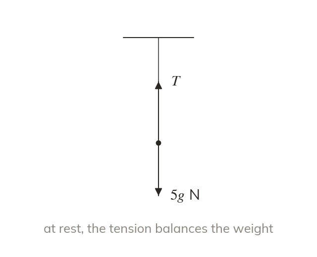
A body at rest, or at constant velocity, is in equilibrium. The forces in each direction balance, so an unknown force can be found.
Pick an answer. If it's wrong, the feedback tells you which mistake it was.
Finished? Next lesson: M10.2 Force Vectors and Newton's Second Law.
For each skill, tap the one that is true for you today. Your Revise pages start with anything you mark Not yet.
Your ratings are saved on this device only.
Log in, then search for a code to practise that skill.